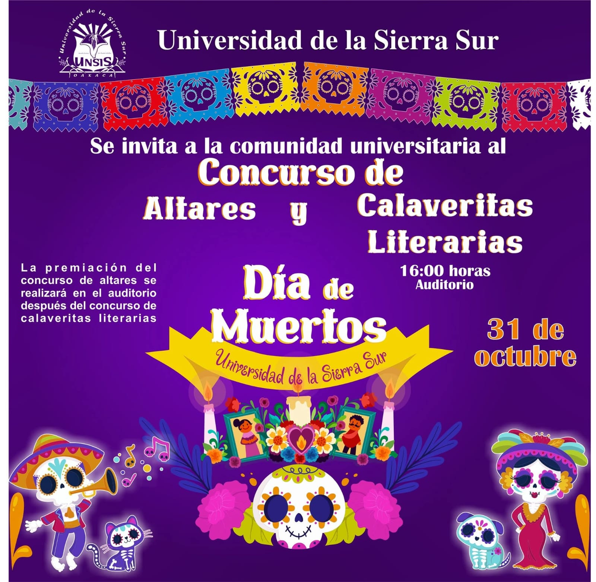

|

Autor:JoseChema Arellanes Canseco |
Concurso de Altares en la UNSISLa Universidad de la Sierra Sur (UNSIS) invita a todos los estudiantes a participar en el tradicional concurso de altares, que se llevará a cabo el 31 de octubre a las 4:00 horas en el Auditorio. Este evento busca rescatar y fortalecer las tradiciones que forman parte de la identidad cultural de nuestra región, fomentando la creatividad y la participación estudiantil. Las autoridades universitarias exhortan a las y los alumnos a unirse a esta demostración de tradición, respeto y memoria, construyendo altares llenos de significado y elementos propios del Día de Muertos. |